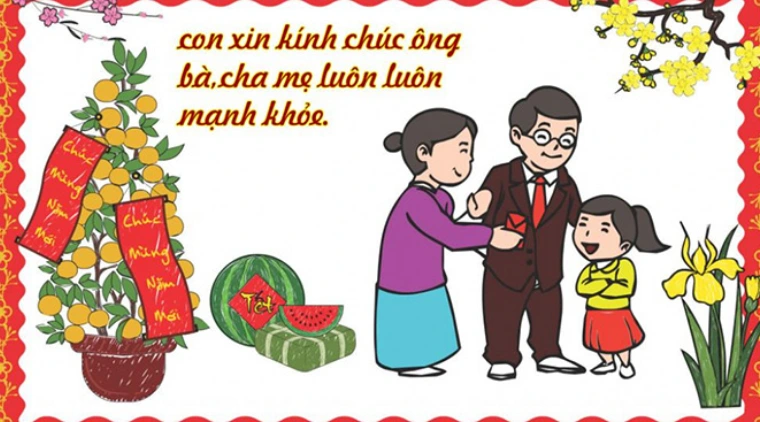
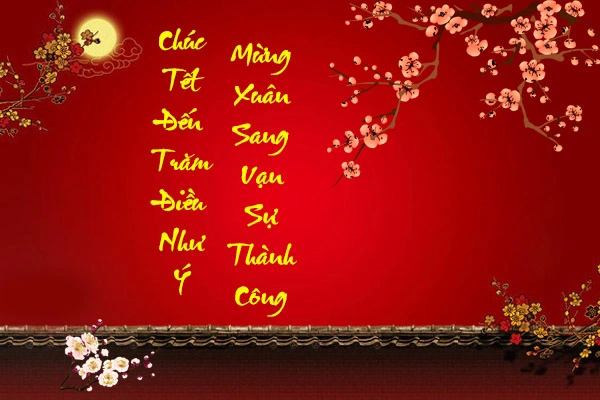
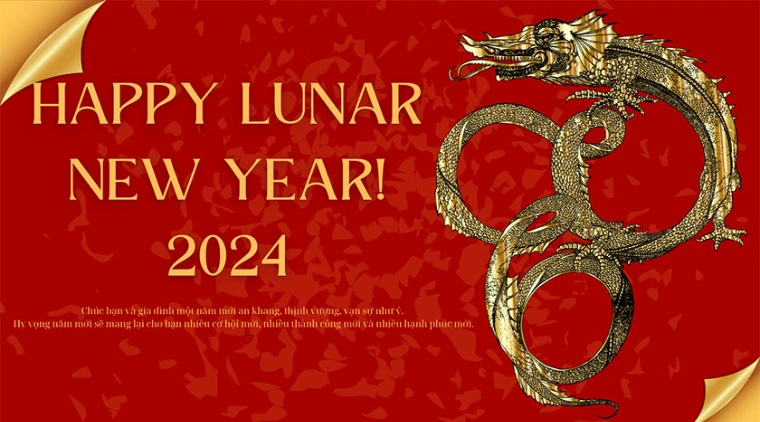
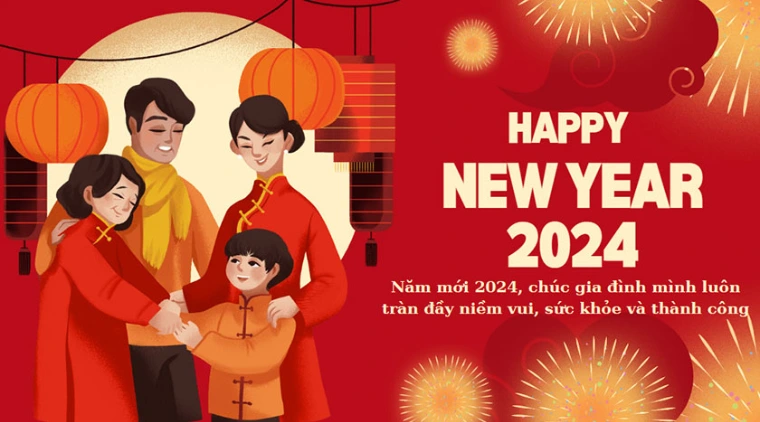

Những lời chúc tết ý nghĩa
.png)
1.Chúc mừng năm mới 2024. Chúc gia đình hạnh phúc, tấn tài tấn lộc, tấn an khang.
2. Năm hết Tết đến đón hên về nhà. Quà cáp bao la. Một nhà không đủ. Vàng bạc đầy tủ. Gia chủ phát tài.
3. Năm mới chúc nhau sức khỏe nhiều. Bạc tiền rủng rỉnh thoải mái tiêu. Happy New Year 2024!
4. Năm mới, công việc như ý, giàu sang phú quý.
5. Chúc Tết đến trăm điều như ý - Mừng xuân sang vạn sự thành công.
6. Năm cũ qua đi, năm mới đã tới. Chúc bạn bầu trời sức khỏe, biển cả tình thương, đại dương tình bạn, sự nghiệp sáng ngời, gia đình thịnh vượng.
7. Năm mới chúc bạn thực hiện được những dự định còn dang dở, quen thêm những người bạn mới, đến những vùng đất mới.
8. Chúc năm mới đau đầu vì nhà giàu. Mệt mỏi vì học giỏi. Buồn phiền vì nhiều tiền. Ngang trái vì xinh gái. Mệt mỏi vì đẹp trai. Và mất ngủ vì không có đối thủ.
9. Năm hết Tết đến, rước lộc vào nhà, quà cáp bao la, mọi nhà no đủ, vàng bạc đầy tủ, gia chủ phát tài, già trẻ gái trai sum vầy hạnh phúc.
10. Chúc bạn 12 tháng phú quý, 365 ngày phát tài, 8.760 giờ sung túc, 525.600 phút thành công và 31.536.000 giây mã đáo.
11. Mừng xuân Tân Sửu chúc mọi người vui vẻ như Chim Sẻ. Khỏe mạnh như Đại Bàng. Giàu sang như chim Phụng. Làm lụng như chim Sâu. Sống lâu như Đà Điểu.
12. Năm hết tết đến – Rước chuột tiễn heo – Ông bà hưởng thọ – Cha mẹ khỏe mạnh – Anh chị thành công – Con cháu học giỏi.
13. Năm mới Tết đến – Rước hên vào nhà – Quà cáp bao la – Mọi nhà no đủ – Vàng bạc đầy tủ – Gia chủ phát tài – Già trẻ gái trai – Sum vầy hạnh phúc – Cầu tài chúc phúc – Lộc đến quanh năm – An khang thịnh vượng.
14. Gia đình hạnh phúc, con cháu hiếu thuận, mã đáo thành công.
15. Vạn sự như ý, an khang thịnh vượng.
16. Thuận buồm xuôi gió, bình an vô sự.
17. Làm ăn phát tài, vạn sự đại cát.
18. Con mong rằng, mỗi mùa xuân trôi qua con đều được gửi lời chúc đến mẹ, con yêu mẹ nhiều lắm.
19. Chúc mẹ một mùa xuân tràn đầy sức khoẻ, hạnh phúc và may mắn, vạn sự như ý, sống lâu trăm tuổi để tận hưởng niềm vui và mỗi năm mẹ lại đem mùa xuân về cho gia đình.
20. Con kính chúc ba má sức khỏe dồi dào, lúc nào cũng "tươi trẻ" như thời mới yêu. Mong nhà mình lúc nào cũng quây quần, chị em chúng con luôn được nghe tiếng cười đùa vui vẻ của ba má.
Qua bài viết trên
Hy vọng bạn đã có thêm nhiêu lời chúc hay và ý nghĩa. Chúc các bạn có một năm mới an khang, thịnh vượng nhé!